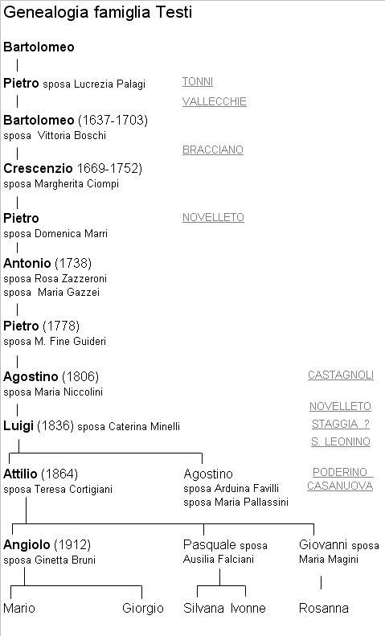

Nel 1931, dopo novanta anni di permanenza a Casapera, i Bucci se ne vanno. Li sostituiscono una famiglia che ha le sue radici nel Chianti Fiorentino: i Tatini. Il capoccio Emilio fu Ferdinando è nato a Greve e ha sposato Raffaella Anichini di Panzano nella parrocchiale di quel paese nel 1893. Una buona famiglia anche se non molto numerosa: erano in sette unità quando Emilio tornò a Quercia, ma i suoi quattro figli maschi sono gia in età adulta e il più piccolo è Alfredo 17enne mentre la sorella Angela nel 1933 lascerà la famiglia per tornare a Monteliscai dove ha sposato Carlo Fabbri. In casa resteranno cinque uomini: Emilio (1869), Giovanni (1908), Ferdinando (1910), Carlo (1912) e Alfredo (1914). Nel complesso è un buon potenziale per lavorare Casapera. Rimase però in casa una sola donna, la mamma Raffaella già avanti negli anni essendo 60enne. Sola fino al 1940 quando ci fu la stagione dei matrimoni e iniziarono poi a nascere le nuove leve. Il primo fu Alfredo che il 25 aprile del 1940 sposò Livia Peccianti delle Gallozzole, e il 5 ottobre di quello stesso anno Ferdinando (1910) prendeva in moglie Nella Lusini (1903), di alcuni anni più vecchia, nella chiesa di Vagliagli. Nel 1946 infine Carlo si sposava a S. Leonino con Giuseppina Fontani. Fin dal primo anno i tre matrimoni furono fecondi: Anna di Alfredo nasce nel 1940; Antonio di Ferdinando nel 1942; Maria di Alfredo nel 1945 e morta dopo 13 giorni; Luciana di Ferdinando nel 1946; Franco di Carlo nel 1948 e Olga di Alfredo nel 1949. Questa fu l’ultima registrazione che abbiamo dei Tatini che nel 1946 sono già aumentati a dodici persone. Il 21 luglio del 1947 era morto Emilio, vicino agli ottanta e vedovo dal 1943. Dopo questa serie di eventi l’altro fratello Giovanni emigrò a Siena, anticipando di qualche anno la partenza di Alfredo per il Poderino avvenuta nei primi anni Cinquanta, e quelle di Carlo e Ferdinando che si spostarono anche loro verso Siena. La storia al Poderino non offre molti spunti: mezzadri e lavoranti dei Barucci fino al 1980. Negli ultimi anni il lavoro agricolo si era notevolmente ridotto e i Tatini se ne tornarono a Siena dove ancor oggi vivono le nipoti.
Dopo una fugace apparizione negli anni 1804-1810 nel podere di Castagnoli, allora parrocchia di Basciano, la famiglia Testi entrò a far parte effettiva del popolo di Quercegrossa nell’anno 1887 quando Luigi Testi si trasferì da S. Leonino al Poderino. Da allora, e sono passati 120 anni, i Testi, presenti tutt’oggi, vantano una permanenza che li fa entrare nel novero delle famiglie più antiche di Quercegrossa.

I dati certi più lontani nel tempo che li riguardano risalgono alla prima metà del Seicento e li troviamo nella Montagnola senese, nella parrocchia di Fungaia, dove nel 1695 i Testi abitano al podere
"Le Vallecchie", nei pressi di Riciano, di proprietà Accarigi. Una registrazione di matrimonio risalente al 1635 ci dà la certezza che la famiglia, allora dimorante a Tonni, si sia trasferita a metà Seicento a Fungaia, la parrocchia che comprendeva Le Vallecchie. Avvenne che Pietro di Bartolomeo Testi, di Tonni, sposò Lucrezia Palagi di Fungaia e questo matrimonio potrebbe aver portato lo sposo a emigrare nel popolo della moglie. Infatti, il successivo ripetersi del nome di Pietro e Bartolomeo nella discendenza dei Testi e la comunità di appartenenza, Fungaia, ci portano ad affermare senza dubbio, nonostante manchi il collegamento, che Pietro, lo sposo in questione, sia stato il padre di Bartolomeo nato nel 1637 a Fungaia due anni dopo il suddetto matrimonio, e nonno di Crescenzio nato nel 1669, lo storico antenato dei Testi di Quercegrossa. Da notare l’uso del nome Bartolomeo ereditato probabilmente dal titolo della parrocchia di Tonni dedicata appunto a S. Bartolomeo.
Crescenzio
I due avi dei Testi sopracitati li troviamo abitare alle Vallecchie nel 1695 in una famiglia di undici persone dove Bartolomeo in età di 58 anni ha con sé la moglie Vittoria Boschi e i figli Iacopo, Crescenzio di 26, Barbara di 24, Maddalena di 21 e Domenico di 18 anni. Iacopo o Iacomo di 28 anni è l’unico sposato e la moglie Maria Maddalena Ciompi o Cioppi gli ha dato due figli: Pietro di 3 anni e Giuseppe di 5 mesi che però morirà nel 1707 a 12 anni. Di questa coppia nel 1694 in S. Giovanni a Siena era stato battezzato un figlio chiamato Giuseppe che probabilmente è morto. C’è anche un garzone, certo Clemente Macinai. Pochi anni dopo, gli anziani Vittoria, il 22 dicembre 1699, e Bartolomeo, il 27 maggio 1703 in età di 66 anni, lasceranno questo mondo e il comando della casa passerà a Crescenzio, il quale in epoca posteriore al 1707 si trasferirà, con i fratelli rimasti, al podere Novelleto dei RR. PP. di S. Leonardo nella Parrocchia di S. Lorenzo al Colle, annesso di Fungaia. Ma in quegli anni di fine Seicento c’è da ricordare, oltre ai due matrimoni delle sorelle Barbara e Lucrezia che entrambe hanno sposato contadini di Basciano, Lorenzo Pepi la prima e Giovanni Pieraccini la seconda negli anni 1695 e 1696, il matrimonio di Crescenzio con Margherita Ciompi, forse sorella della moglie di Iacopo, che darà vita ad una numerosa prole. Dal lungo elenco dei figli di Crescenzio mancano sei nomi, tutti di morti in tenera età e in totale assommano a quattordici le nascite di cui abbiamo notizia e tra questi Pietro, il diretto antenato, che a sua volta, darà vita insieme ai fratelli a numerosi discendenti che inevitabilmente porteranno la famiglia a dividersi. Pietro avrà sei figli, Giovanni cinque, Giuseppe dieci, otto Bartolomeo e sei Antonio. Dopo di loro, nella seconda metà del secolo, il nipote Antonio, figlio di Pietro, supererà il nonno Crescenzio e raggiungerà la bella cifra di sedici figlioli con due mogli. Trascorsi tutti insieme alcuni decenni a Novelleto, nel gennaio del 1744 la famiglia, sotto pressione demografica, è costretta a dividersi. Il vecchio Crescenzio, con Margherita e tutti i figli escluso Pietro, si trasferiscono al podere detto Bracciano delle RR. MM. di S. Maddalena di Siena. Pietro, invece, con la moglie Domenica Marri, il figlio primogenito Antonio e alcune zie e cugini restano a Novelleto. Crescenzio morirà a Bracciano, nel 1752, tre anni dopo la moglie Margherita. Con l’avvenuta separazione iniziamo a seguire più da vicino quelli che sono gli avi dei Testi di Quercegrossa abbandonando per sempre il ramo di Bracciano.
Antonio
Dal matrimonio di Pietro con Domenica Marri nascono Antonio nel 1738 e altri cinque figli. Antonio all’età di 19 anni prende moglie ai primi del 1757, Rosa Zazzeroni che rimane subito in stato interessante. Passano i mesi e a dicembre arriva il giorno del parto. Nasce una bambina alle una di notte, ma quattro ore dopo, alle 5 della mattina la mamma muore. Maria, così viene battezzata la bambina, sopravvive soltanto due giorni. La seconda moglie Maria Gazzei, presa quasi subito, si dimostrerà donna di tempra e tra gli anni 1760 e 1786 metterà al mondo quindici figlioli e morirà 70enne il 16 aprile 1807 a Castagnoli di Basciano. Incomincia a partorire nel 1760, e nasce Elisabetta, poi, ogni due anni, M. Rosa, M. Annunziata, M. Domenica. Finalmente nel 1767 un maschio, Giuseppe, ma resta in vita per pochi mesi. L’anno successivo due gemelli: il maschio muore alla nascita, la femmina M. Domenica, dopo due giorni. Era il 1769. Instancabile continua la serie delle nascite, ma sono sempre tutte femmine: M. Colomba (1770), Maria Anna (1771) e M. Domenica (1773). C’è da scoraggiarsi, ma i successivi tentativi della coppia avranno buon esito. Esattamente quattro anni dopo nasceranno Pietro (6 gennaio 1778) e poco dopo Luigi (1779) e saranno i soli figli maschi a vivere perché delle ulteriori nascite, M. Rosa (1781), Agostino (1783) e Teresa (1786), nessuno supererà l’anno di vita. Gli ultimi due saranno vittime di qualche epidemia alla vigilia del Natale 1791.
Castagnoli
Conclusa questa lunga serie di nascite la famiglia di Antonio e Maria Gazzei, con Pietro ormai capoccio stante la cecità che ha colpito il padre, si sposta a Castagnoli, uno dei tanti poderi dei Sansedoni nel territorio di Basciano. L’anno è il 1804, Pietro ha già preso in moglie Maria Fine dei Guideri di Passeggeri ed è nata Rosa nel 1802. Completano la famiglia il fratello 20enne Luigi e l’anziana zia Caterina, sorella 80enne di Antonio, che morirà allo Spedale di Siena il 21 febbraio 1808. Sono sette persone alle quali si aggiungeranno Agostino (1806), M. Rosa (1807), Giovanni (1808), Pellegrino (1810) e un garzone Antonio Granai. Dei due anziani genitori di Pietro sappiamo solo che Maria Gazzei è morta il 16 aprile 1807 mentre tacciono i documenti parrocchiali sulla dipartita di Antonio, forse anche lui deceduto all’ospedale di Siena. Nello stato delle anime del 1807, Antonio e definito di 80 anni e così Maria. In realtà egli ha 69 anni e altrettanti, o poco meno, la moglie; è evidente che siamo di fronte ad un grossolano errore, tipico del tempo, e non era cosa insolita. Infatti, un altro errore verrà commesso alla nascita di Agostino quando il parroco annota:
“Agostino di Pietro di Giuseppe del fu Pietro Testi e di Maria Fine di Arcangelo Guideri”. In questo caso il parroco Mecacci confonde Antonio con Giuseppe.
Agostino
Battezzato al Poggiolo il 27 gennaio 1806, Agostino fa appena in tempo a crescere che la famiglia, alla fine del 1810, si sposta nuovamente verso Monteriggioni. Qui, dopo un decennio passato al podere della Rosa, fanno il loro ritorno a Novelleto. In questo antico podere era sempre rimasto il cugino Carlo e ora si riuniscono ai parenti, suoi discendenti, che sono il figlio Giovanni e il nipote Carlo, capoccio nel 1841. Frattanto, dopo il trasferimento, erano nati gli ultimi figli di Pietro: Antonio nel 1812, Giovanni nel 1815, Maria Luisa nel 1818 e Maria Caterina nel 1820. Passa la generazione ed è ora il turno Agostino a formarsi una propria famiglia e dare continuità al ramo del trisnonno Pietro. Prende in moglie Maria Niccolini e nascono Santi (1834 e 1839), Luigi (1 ottobre 1836), Giovanni, Teresa (1838 e 1840), il terzo Santi (1840) e Cherubina (1842). Poco dopo il 1841, per motivi sconosciuti, tutti i Testi abbandonano il territorio di Monteriggioni sia Novelleto che Bracciano e si spandono nel territorio di Poggibonsi che va dalla parrocchia di S. Antonio al Bosco a quella di Staggia. Infatti, ritroviamo Agostino a S. Antonio al Bosco dove nel 1850 nasce Giovanni. Permane comunque, per qualche decennio, un periodo di scarsa documentazione ed è difficile individuare i movimenti della famiglia e i poderi abitati.
Luigi
Luigi di Agostino lasciati i parenti continua il suo cammino da solo perché con la moglie Caterina Minelli eccolo apparire a S. Leonino, pigionale del proposto nell’anno 1886, con i figli Attilio (22 anni ), Agostino (15), Maria (16) e Virgilio (11). Vi arriva dopo una probabile permanenza a Staggia, dove sembra che vi sia nato Attilio. E’ chiaro che Luigi, registrato come pigionale, ha abbandonato l’antico mestiere del mezzadro quando si è diviso dalla famiglia, ma non per sempre perché l’anno successivo nel 1887 torna da mezzaiolo a coltivare le terre del Poderino, ancora di proprietà del sig. Favilli. Secondo quanto hanno tramandato le memorie familiari sembra che i Testi siano andati ad un passo dall’acquisto del Poderino. Sarebbe stato
"lo zio fattore", fratello di Luigi, già proprietario di poderi intorno a Poggibonsi, l’acquirente che aveva promesso a Luigi di acquistargli il Poderino. Era un uomo solo ed era riuscito a mettere insieme una piccola fortuna, ma quando il Poderino fu messo in vendita lo zio fattore era già morto improvvisamente da poco tempo e quelli che gli erano intorno si erano preso tutto e ai Testi del Poderino
"un gli tocco niente" come spesso capitava nelle divisioni di quel tempo. Infatti, nel 1888 ai Favilli subentrano i Barucci nella proprietà e Luigi Testi vi rimane ancora per quattro anni, da contadino. Frattanto la famiglia cresce sia in numero che in forza e quando alla Casanuova di Quercegrossa si libererà il podere, Luigi con i suoi figli non esiterà ad entrarvi. Il figlio maggiore Attilio, presa moglie a S. Leonino Teresa Cortigiani, aveva già dato il via alle prime delle nove nascite documentate di questa coppia di sposi.
Casanuova
Alla data canonica del 3 marzo dell’anno 1892, i Testi fanno il loro ingresso alla Casanuova: sarà l’ultimo podere della loro storia di coloni. Dopo avervi passato ogni sorta di esperienza tipica del secolo Novecento, e dopo 74 anni, al momento opportuno, nell’anno 1966, lo lasceranno per stabilirsi in Quercegrossa. Alla Casanova, con la famiglia che cerca di potenziarsi, si fa particolarmente intenso il movimento anagrafico. I figli di Attilio nascono con continuità fino al 1906: Giuseppe (?), Giovanni (+1894), Giovanna (1895), Giovanni (1897), Giuseppa (?), Santi (+1902), Angela (1903), Pasquale (1906). Poi, nel 1912 quando Teresa ha 40 anni, arriva Angelo il 15 febbraio. Disgraziatamente, dopo quattro mesi, per malattia o a causa delle conseguenze del parto in età matura, Teresa si spenge alla Casanuova. Alle nascite dei primi anni si accompagna una triste morte prematura: Virgilio figlio di Luigi, a 30 anni:
"morì ricevendo i SS. Sacramenti il 26 ottobre del 1903 nella sua abitazione colonica detta Casanuova".
Agostino
Anche Agostino, ormai 30enne, si decide a prender moglie e il 20 ottobre del 1900 sposa Arduina Favilli (1882) del Castellare, figlia 18enne del salariato Giuseppe Favilli, e senza nessuna parentela con i vecchi padroni del Poderino. Ma sarà un breve matrimonio il loro: cinque anni dopo, e precisamente il 13 luglio 1908, Arduina, forse in seguito al parto per la nascita della figlia Giulia, muore. Agostino si risposerà alcuni anni dopo con Maria Pallassini e accrescerà la sua famiglia di altre tre femmine prima di morire 50enne nel 1924: Nella (1914), Caterina (1916) e Ada (1919). Anche lui aveva pagato e pagherà il suo tributo alla morte infantile con la perdita di Orlando, di 1 mese e mezzo nel 1923, e più tardi, nel 1930, la figlia Nella di 16 anni. La vedova Maria le sopravvivrà per oltre quaranta anni prima di raggiungerlo il 16 luglio del 1966, per un malaccio, all’età di 85 anni. Il patriarca Luigi traghettatore da S. Leonino al Poderino e alla Magione morì il 28 aprile del 1913, cinque anni dopo la scomparsa di Cherubina, un’anziana sorella che viveva con lui alla Casanuova.
Giovanni, Pasquino e Angiolo
Al naturale susseguirsi di nascite e morti si alternarono con regolarità in venti anni nove matrimoni compresi quelli di Giovanni (il capoccio), Pasquale e Angiolo che resteranno gli elementi portanti della famiglia:
1921: il 19 gennaio Giovanna di Attilio sposa Guido Brogi di Quercegrossa;
1923: il 10 febbraio Giuseppa di Attilio sposa Alfredo Cavini di Monternano;
1926: il 13 febbraio Angiola di Attilio sposa Guido Taddei di S. Leonino;v
1929: il 15 giugno Giulia di Agostino sposa Nello Panti abitante in Valli a Siena;
1930: il 15 giugno Giovanni di Attilio sposa Maria Magini di Ricavo a S. Agnese;
1933: il 14 gennaio Pasquale di Attilio sposa Ausilia Falciani in Valli a Siena;
1936: il 22 febbraio Nella sposa Costantino dei Nucci del Casalino;
1940: gennaio, Angiolo di Attilio sposa Ginetta Bruni (1913) a S. Fedele;
1940: il 13 aprile Ada di Agostino sposa Gino Marradi delle Gallozzole.
Nel 1936 alla compilazione della stato delle anime di don Grandi la famiglia è composta di dieci persone, compreso un arrivo della nuova generazione, Silvana del 1933, alla quale faranno seguito Ivonne (1939) di Pasquale, Rosanna (1937) di Giovanni, tutte battezzate a S. Leonino, Mario (1940) e Giorgio (1947) di Angiolo. Intanto anche il vecchio Attilio muore nel 1937, il 30 dicembre a 73 anni di vita. Alla fine del secondo conflitto, caratterizzato dalla prigionia di Angiolo in Germania, la famiglia conterà undici elementi formata dai nuclei di Giovanni, Pasquale e Angelo, ed è sempre presente l’anziana zia Maria Pallassini vedova di Agostino che morirà nel 1966. Con gli anni Sessanta la famiglia Testi inizierà e ridursi progressivamente per la morte del fratello e capoccio Giovanni avvenuta il 4 gennaio 1960 e i matrimoni di Ivonne (1962), Rosanna (1963) e Silvana (1965). Inoltre, a seguito delle difficoltà derivate da un mondo agricolo in piena crisi, Angiolo, conosciuto da tutti come
“Piombo”, contadino di ferro, con i figli Mario e Giorgio avviati ad altre professioni, deciderà, insieme a Pasquino nuovo capoccio, di ritirarsi nel 1966 e rinunciare ad un’attività che per mille motivi non meritava più una sola goccia di sudore. A quella data Pasquino tornò a Siena e Angiolo si trasferì in Quercegrossa dove finì i suoi giorni l’8 ottobre 1994 nella sua nuova abitazione costruita dai figli.
Inizio pagina
Indice famiglie del '900
Indice dei Capitoli